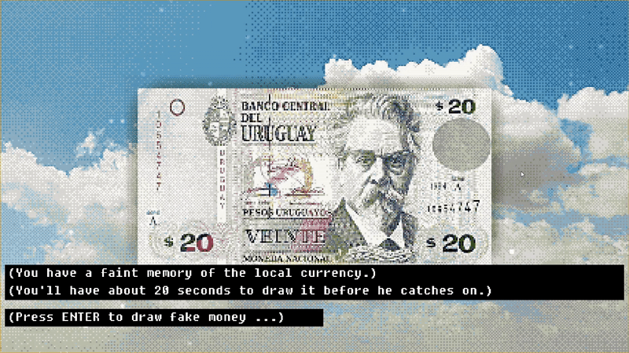
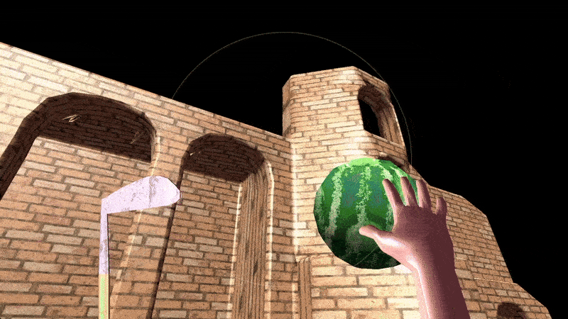

Games #
Soap Glider #


A precision platformer inspired by the classic Android game Run.
- I used signed-distance fields and path-tracing for the foreground, and pre-rendered images for the background.
- I implemented subsurface scattering, ambient occlusion, cubemap reflections, glare, and motion blur.
- Might cause migranes.
The Blue Break #


A surfing game I made for the Chili Code Jam #3 in less than 7 days. Since then I’ve been working on a massive update to improve the fidelity and apply advanced rendering techniques.
- I combined path-traced SDF geometry—used for effects—with rasterized triangular geometry—used for rigid objects.
- For physics I generate SDF representation of meshes.
- Instead of Phong, I implemented a modified version of the EON BRDF formula, which gives much better results.
- Everything is multi-threaded using a custom job scheduling system.
Wanda #


Enter-the-gungeon-inspired Bullet-hell game.
- High-quality ray-traced pre-rendered backgrounds.
- Point lights.
- Real geometric displacement mapping.
- Ray-traced reflections.
- Collision map generated from the geometry.
- Local co-op with mouse-and-keyboard versus controller.
- Custom SDF primitives for architectural elements.
- Screen-space effects: curvature-based outline, bloom, image-based glare.
- Skeletal animation.
Bribe Artist #

You have 20 seconds to draw a fake dollar, or you go to jail! Made for the 20 Second Game Jam 2024.
- Runs in the browser.
- Uses a hacky statistical algorithm to score your drawing.
Bogwalker #

Logic puzzle game. It’s like Minesweeper, but you can sense the mines from further away. I made this in 2 weeks.
- Randomly-generated levels.
- 4 difficulty settings.
- A beautiful water shader.
Blade & Eye #

First-person golf-themed fantasy adventure game I made for a game jam. Iconoclastic controls. Hit watermelons to score points. It’s a simple demo for a greater idea.
- Used Blender as a level editor.